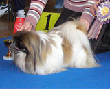

<table border="0" class="layout">
    <tbody>
        <tr>
            <td valign="top">
                <div class="holster">
                    <div class="block_container s3 b-text b-static-text user_css_12816005438" id="e_127779778239">
                        <p><em><strong>Новикова Жанна-питомник <a href="http://www.jasmin-palace.ru/">"Из жасминового дворца"</a><br /></strong></em></p>
                        <p> </p>
                        <p><strong>Брик Дина</strong> -<strong>питомник <a href="http://www.aisingiorokennel.ru/dog.html">"Айсингиоро"</a></strong></p>
                        <p> </p>
                        <p> </p>
                        <p><strong>Заходите к нам в гости</strong></p>
                    </div>
                    <div class="block_container s3 b-image txt-center" id="e_1282744121414"><span></span></div>
                </div>
            </td>
            <td>
                <div class="holster">
                    <div class="block_container s3 b-text b-static-text user_css_12816005438" id="e_12827439981">
                        <p style="text-align: center;"><span style="color: #006600;"><span style="color: #0000ff;"><strong>Пекинес</strong></span></span></p>
                        <p style="text-align: justify;"><span style="color: #006600;"><span style="color: #0000ff;"><strong>Из истории породы:</strong> считавшиеся воплощением легендарной собаки Фу, отгоняющей от человека злых духов, пекинесы почитались китайцами как полубожества. Простые люди обязаны были им кланяться, кража собаки каралась смертью, а когда император умирал, его пекинесов приносили в жертву, чтобы они охраняли покойного в загробной жизни. На Запад эта порода попала после 1860 года. Тогда во время второй "опиумной" войны Летний дворец в Пекине захватили англичане. Императорским гвардейцем было приказано убить всех пекинесов, чтобы они не попалив руки "иноземных дьяволов", но пять собачек чудом уцелели. Их отправили в Англию, где одна из них была представлена королеве Виктории, которая остроумно назвала пёсика Лути, то есть "Трофейчик". От этой военной добычи и ведут начало все современные пекинесы. Порода впервые выставлялась в Великобритании в 1893 году, а через несколько лет попала в США.</span></span></p>
                        <p style="text-align: justify;"><span style="color: #006600;"><span style="color: #0000ff;"><strong>Общая характеристика:</strong> энергичная, отважная, с независимым характером, но послушна и преданна хозяину. Ладит с детьми, но тянется к взрослым, стремясь стать центром внимания и даже "распорядителем" в доме.</span></span></p>
                        <p style="text-align: justify;"><span style="color: #006600;"><span style="color: #0000ff;"><strong>Содержание и уход:</strong> пекинес будет одинаково рад и прогуляться с хозяином за городом, и не торопясь побродить по городскому парку. Необходимо ежедневно пользоваться щёткой с мягкой щетиной, брюшко собаки следует расчёсывать, положив её на спину, а спинку и бока - поставив собаку на стол или держа её на коленях. Пекинеса не стоит купать слишком часто, лучше изредка обрабатывать шерсть собаки тальком, а потом удалять его щёткой. </span></span></p>
                        <p style="text-align: justify;"><span style="color: #006600;"><span style="color: #0000ff;"><strong>Размеры:</strong> вес 3,5-5 кг (кобели), 3,5-5,5 кг (суки).</span></span></p>
                        <p style="text-align: justify;"><span style="color: #006600;"><span style="color: #0000ff;">_________________________________</span></span></p>
                    </div>
                </div>
            </td>
        </tr>
    </tbody>
</table>​
